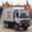

CIFAR-10 重建细节对照
固定同一张原图，比较优化前后的颜色、轮廓和纹理，也可以对照两种潜变量尺寸。

局部放大
点击原图选择 12 × 12 像素区域，或聚焦原图后用方向键移动。
使用两份原版解码器，各从标准正态分布连续取 16 个潜张量。
正在读取测试结果…
整套测试集的重建表现
对官方 10,000 张测试图用后验均值重建。PSNR 和 SSIM 越高越好；细节误差比较像素相对 3 × 3 局部均值的偏差，以 0–255 的强度单位计，越低越好。
| 尺寸 | 版本 | PSNR （dB）↑ | SSIM ↑ | 细节误差 ↓ |
|---|
原版使用 50,000 张训练图训练 10 轮。细节优化实验固定 45,000 张训练图，并用另外 5,000 张验证图选择权重。两版都采用 β = 0.003。
报告与实验文件
修订报告比较两份原始权重的后验分布，并记录在同一训练预算下改变 8 × 8 模型 β 的结果。